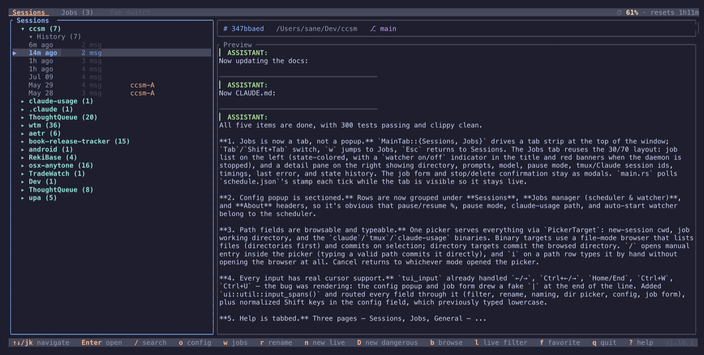
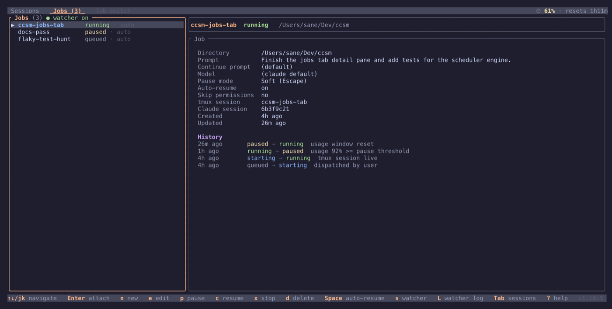
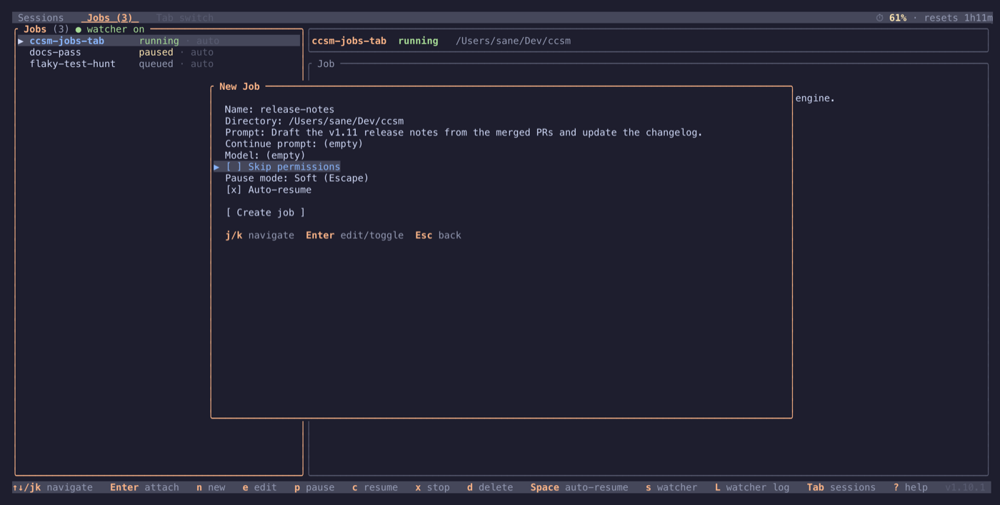

ccsm
A terminal UI for every Claude Code and Cursor Agent session you've got going, plus a scheduler that works while you're away.
What it is
ccsm (Claude Code Session Manager) is a terminal UI that puts your Claude Code and Cursor Agent CLI sessions in one place. Instead of hunting through terminal history or juggling separate windows, you get one list: browse past conversations, resume where you left off, and spin up new sessions, all without leaving the terminal.
It's built for anyone who juggles multiple projects or context-switches between agent sessions often. Sessions are grouped by project, live tmux-backed sessions show real-time activity indicators, and a scrollable preview lets you see what a conversation was about before you resume it.
ccsm also includes a usage-aware scheduler. You can dispatch a Claude Code session with a prompt and let it run unattended: the watcher pauses the session before your usage budget runs out and picks it back up automatically once the window resets.
Features
- Tabbed main window:
Tabcycles the Sessions browser, the Jobs manager, and Config, all three sharing the same list and detail layout - Claude + Cursor: one merged list of Claude Code sessions and Cursor Agent CLI chats, with rows marked by source and a key to cycle between both, Claude only, or Cursor only
- Tree & flat views: browse sessions grouped by project or as a flat, newest-first list
- Conversation preview: a scrollable preview of the last 20 turns, with the session's working directory and git branch in the info bar
- Live sessions: start, attach, detach, rename, and stop tmux-backed sessions, with activity indicators for active, idle, and waiting-for-input states
- Usage-aware scheduling: dispatch a session with a prompt, pause it automatically before your 5-hour budget runs out, and continue it once the window resets
- Jobs know when they're finished: a stop hook, a completion marker in the transcript, and an idle fallback all work together so a finished job is marked done instead of endlessly re-dispatched
- Directory browser: browse for any path the app needs, a session's directory, a job's working directory, or the underlying binaries, instead of typing it by hand
- Auto-update: background update checks with one-key install, SHA256 checksum verification, and an automatic restart
- Favorites & filtering: pin projects to the top of the list, filter by name or path, and toggle a live-only view
Screenshots



Getting started
On macOS or Linux, the quick install script downloads the latest release binary from GitHub and installs it to ~/.local/bin/ccsm (make sure that's on your PATH):
curl -fsSL https://raw.githubusercontent.com/faulker/ccsm/main/remote-install.sh | bashThen just run it:
ccsm